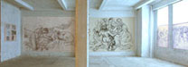
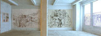


MEMORIAL on the 50th Anniversary of the Kafr Qasem Massacre
Abdel Tamam
Artist of Kafr Qasem
November 8, 1999,
Interview with Artist Abdel Tamam at Kafr Qasem in Palestine48
Interview, translation, and photography by Samia A. Halaby
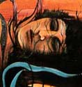
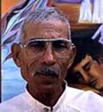
 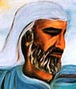
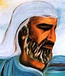
I first met artist Abdel Tamam in Kafr Qasem on the day of the memorial march honoring the victims of the 1956 massacre. It was at the open-air exhibition of his work at the Town Hall. As he stood in front of his paintings explaining them to his fellow townspeople he exuded the pleasure of standing in the sun and breathing fresh air. Later while I interviewed him I could see that he is a calm and quiet man. His eyes smile but the creases at their edge remind me of the pain he has seen and suffered at the hands of the Israelis. Still yet there is something that sparkles in his demeanor.
I asked Abdel Tamam where and when he was born and how he started painting. "I was born in Kafr Qasem in 1944. I began drawing as a child using chalk and pencil. I started in the late sixties. Maybe it was 67 or 68 because in 68, 69,and 70 I was in prison."
|
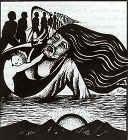 Title unknown |
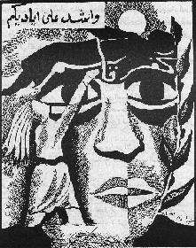 "I take you by your hands" |
Why were you in prison? "I was accused (by the Israelis) of being a member of one of the Palestinian resistance organization. I was placed in administrative detention which meant that I had no recourse and could have remained in prison forever. You never know if and when you would get out. They accused and imprisoned all who were activist." (see note below)
When did you begin drawing about the Kafr Qasem massacre executed by the Israelis? "I began drawing about the Kafr Qasem massacre of 1956 immediately after it happened. We did posters and wrote on the walls. I was politicized by the massacre. The teachers did not encourage me. Teachers always fear losing their jobs and discourage us. They are dogs in the political sense, not in all ways of course."

|
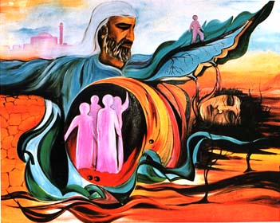 |
Tell us about your first show? "When I was in the 8th grade, there was an exhibition which I did not see. I did a drawing which took first prize. They told me about it. I had done a drawing which was an assignment given by the teachers. It was a drawing about transportation. I was 13 years old then." Of course there was no public transportation in Kafr Qasem at that time nor was there electricity or running water. Those were niceties that the Israelis did not provide the Arab villages even though they taxed them heavily. "At age 14 I began drawing about the massacre and the Israeli police used to come and confiscate all my drawings. They entered my home three to four times and took my drawings."

"I am Calling You" |
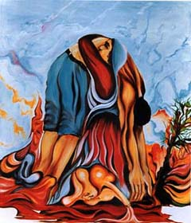
Title unknown |
What materials did you use then? "I used pencil and water colors. I used to go without tasreeh (official written permission from the Israeli authorities for movement that all Palestinians had to have) to Petah Tikva [an Israeli town] to buy a box of water colors and it lasted me for a year."
"In prison I did a lot of drawings and the Israeli jailers would not let me send them out without their permission and they did not give such a permission. They came and took all the drawings which I made. They promised to give them back to me but at the end, when they let me out, they refused to give them back to me. My drawings were not returned. They still have them. I did not draw about the massacre or about Palestinian politics because they would have made life impossible for me. So I drew about Viet Nam."
I asked Abdel Tamam if he would not go back and demand the drawings from the Israeli prison. He said: "I cannot go back to that place. I had a lot of pain there and it is impossible for me to go back to it voluntarily." I then asked him if he had children and if he would not request them at a time in the future to go demand his drawings back from the Israeli government. He responded saying: "Those are past times and they are gone and it is best to forget them."
|
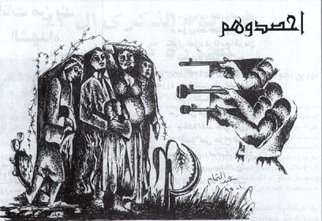
"Harvest Them" |
"Harvest Them" was the call used by the Israeli executioner when he gave the order to his men to open fire at unarmed workers returning home from work, anticipating a peaceful night of rest." It is interesting that Abdel Tamam does not give the Israeli executioners the dignity of having heads on their shoulders in this drawing.
I asked Abdel Tamam if he ever studied art. He said: "I did a course in 1972. I could not take the certificate because the Israeli mukhabarat (secret service) threatened me." I asked him how they knew that he was doing the course and he responded that they watch us all the time and know all that we are doing. He continued: "The course was in Tel Aviv in a place called Studio Cesar. They taught me graphic design. I went for seven months. I only gained from them my own self confidence. They assigned us design projects and I was successful in these projects." Then Abdel Tamam proceeded to describe the assignments in surprising detail, revealing a crisp memory for events and details and a power of accurate description.
|
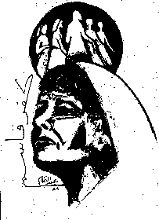
"Kafr Qasem" |
|
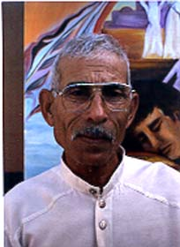
Portrait of Abdel Tamam October 29, 1999 |
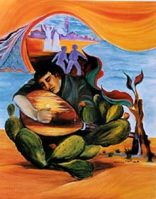
Title unknown |
Have you ever exhibited outside Palestine? "I was asked to exhibit in the Khaleej (The Gulf) in Qatar. I did not know how to handle the fact that Qatar has no official connection to Israel. I have no organization to help me or represent me. I was worried about the official Israeli reaction and its possible negative and destructive consequences on my life."
For how much do you sell your work? "I sell my work only to the person I respect and if so it happens, then there is no disagreement."
Did you ever teach and would you teach? "Many students request to study with me and I can't do it due to lack of materials and space."
Did you know of any other artists who were painting in Palestine48 under the Israeli Government? "There was a communist artist who drew for Al-Itihad, the communist newspaper. He drew abstract caricatures. Other than him I do not know any others. The Communism Party protected him."
Can I put your pictures on the Internet on my web pages? "You can use them in any way but not for profit. I make my paintings for my people and want them used for that purpose."
Web posting: Samia A. Halaby, September 2006.
![[Art on the Net]](/images/artnet_button.gif)